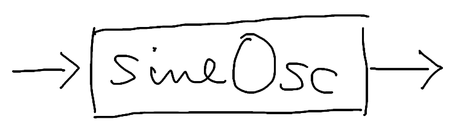
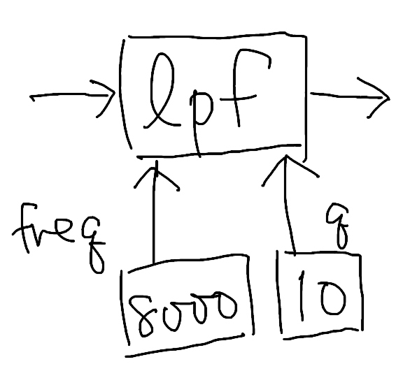
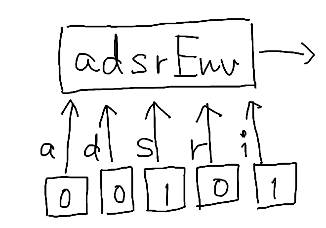
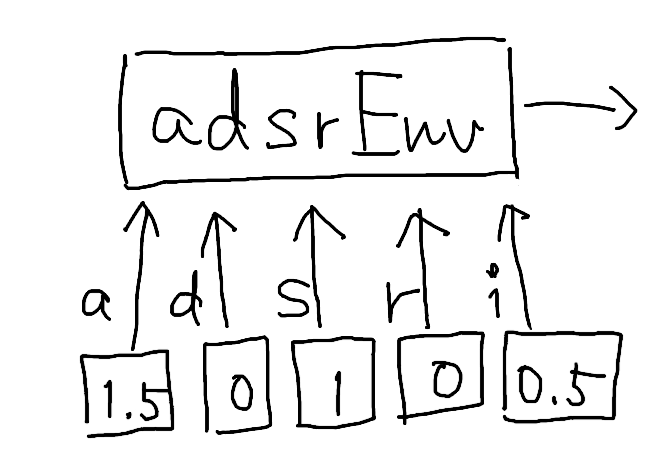
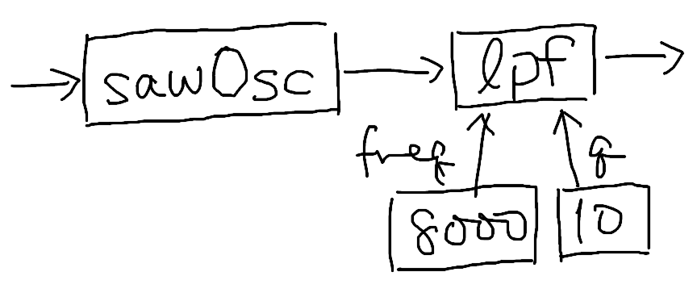
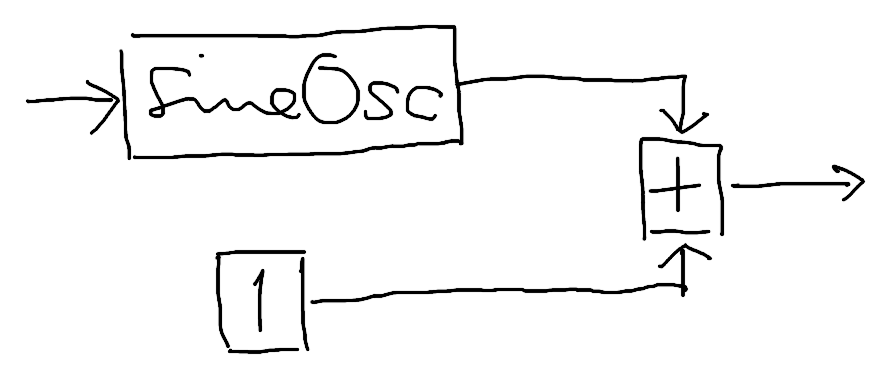

以前に簡単に触れたモジュールの構築方法について、ここで詳しく解説します。
すでに述べた通り、モジュールを構築するにはモジュール定義を記述します。以下の説明では、ModDL で記述したモジュール定義と、そこから生成されるモジュールの構造とを併せて示していきます。
単独のノードを生成するには、モジュール定義の一種であるノード定義を使います。
たとえば、ノード定義の一種である
sineOsc
を記述すると、正弦波のオシレータが生成されます。
sineOsc
ノードの種類によっては、パラメータ入力を受け付けるものがあります。たとえばノード定義
lpf
から生成されるノード（以下、混乱の恐れがなければ簡単に「lpf
のノード」とか、単に「lpf」とも言うことにします）は、パラメータ入力として
freq と q
を受け付けるようになっています。これらに値を設定するには次のように記述します：
lpf { freq: 8000, q: 10 }
lpf
のこれらのパラメータは必須であり、指定しないとエラーになります。たとえば次のような記述はエラーになります：
// 全てエラー
lpf
lpf { freq: 8000 }
lpf { q: 10 }一方、パラメータを省略できるノードもあります。たとえば
adsrEnv
は 5 つのパラメータ入力 attack, decay,
sustain, release, initial
を取りますが、これらは全て省略することができます。省略した場合、それぞれのデフォルト値である
0, 0, 1, 0,
1 が補われます。
adsrEnv
一部のパラメータだけを指定することもできます：
adsrEnv { initial: 0.5, attack: 1.5 }
あるノードの出力を別のノードの入力に接続する方法を解説します。接続する先の入力が主入力かパラメータ入力かによって、記述のしかたが異なります。
パラメータ入力の場合は、これまで見てきた通りです：
lpf { freq: 8000, q: 10 }このとき、定数 8000 を出力するノードが
lpf
のパラメータ入力 freq に、10
を出力するノードが q に、それぞれ接続されています。
8000 や 10
は数値ですが、ノード定義の入力として使われているため「数値を出力するノードのノード定義」として解釈されます。
これに対して主入力の場合は、ノード定義同士を
|
演算子で連結します。先ほどの
lpf
に sawOsc の出力を入力するには次のようにします：
sawOsc | lpf { freq: 8000, q: 10 }
ノードの出力に対して数値演算を行うこともできます。
ノード定義に対して演算子を適用すると、演算子は「ノードの出力に対して演算を行うノードのノード定義」として解釈されます。このとき、演算の相手が数値であれば、こちらも「数値を出力するノードのノード定義」と解釈されます。
sineOsc + 1
両方とも数値の場合は数値のまま計算され、ノード定義にはなりません。
// 数値の 3 と等価
2 + 1あるモジュールに入力されてくる値を、モジュール定義の中で明示的に扱いたい場合があります。
たとえば、シンセサイザの方式の一種、加算合成を考えてみましょう。加算合成ではオシレータを複数用意して、それぞれに異なる周波数を与えて同時に発音させます。個々のオシレータに与える周波数は比例関係にあることが多いです。今回はオシレータを 2 つとし、2 つめのオシレータに与える周波数は 1 つめの 2 倍としましょう。
これまでに挙げてきたモジュール定義の例では、ただ 1 つのオシレータが常にモジュールの入り口（左端）に位置し、その主入力は外部に開かれていました。ここに外部から周波数が入ってくれば、オシレータを望みの周波数で発音させることができました。
しかし、オシレータが 2 つになると困ります。入ってくる周波数の値を 2 つのオシレータに分配したいのですが、その方法がありません。「入ってくる周波数の値」がモジュール定義のどこにも明示されていないので、暗黙のうちに 1 つのオシレータが独占することしかできないのです。
そこで、ModDL
では対策を用意しています。それが入力参照です。入力参照はその場に入力された値に名前をつける機能であり、=x=>
という構文で表します。この構文は「ここに入力されてくる値を
x という名前で参照する」ことを意味します。
正確には、「入力されてくる値を出力しているノード」を名づけていますが、値を名づけていると考えても差し支えありません。
=x=> という記法から、x
という何かが配線に乗ってやって来る様子を想像してください。
次の定義は、入力されてきた値を freq
として参照し、その値を sineOsc に入力しています：
=freq=> freq | sineOsc結果としては冒頭で紹介した
sineOsc
を 1 つだけ置いた例と同じですが、今回は入力の freq
が明示されています。
こうなれば、sineOsc
に入力される周波数を 2 倍にすることは簡単ですし：
=freq=> (2 * freq) | sineOscさらに 2 つのオシレータを共存させることもできます。2 つの出力を足し合わせれば、加算合成の完成です：
=freq=> freq | sineOsc + (2 * freq) | sineOsc|
演算子は四則演算などの演算子よりも優先度が高いことに注意してください（多くの言語におけるビット演算の
| 演算子とは異なります）。
減算合成シンセサイザの基本的な構造である vco | vcf * vca
を括弧なしで書けるようになっています。
オシレータに入力される周波数を手前で加工するテクニックは「周波数エフェクト」と呼ばれています。
ここで行った加算合成は、周波数エフェクトの応用例といえます。
入力参照はモジュールの先頭以外でも使うことができます。次の例ではオシレータの出力に 2 種類のフィルタを適用したのち合成しています：
sawOsc | =wave=> wave | lpf { freq: 800, q: 10 } + wave | lpf { freq: 1200, q: 10 }一般に、入力を複数回使いたい場合や、入力に対して数値演算を行いたい場合は入力参照の出番となります。
暗黙に送られてくる値に名前をつける、という意味では、入力参照は関数型プログラミングでいう無名関数（ラムダ関数）に似た機能といえます。
ModDL には別途無名関数の機能があるので、混同しないよう注意は必要ですが、入力参照を「モジュール定義におけるラムダ関数」と捉えることは有用でしょう。